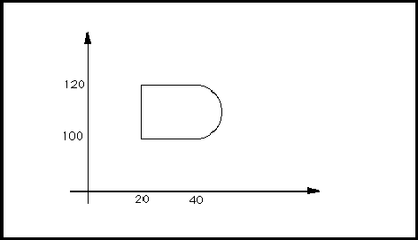

contractDisplay ::= '(' 'contractDisplay'
( addDisplay | replaceDisplay | removeDisplay )
')'
pageTitleBlockAttributeDisplay
ContractDisplay is used to define display positions for contract. When used in the context of pageTitleBlock, it may add, replace or remove displays. Within the context of a template definition, only addDisplay may be used.
copyright ::= '(' 'copyright'
year
{ stringToken }
')'
Copyright is used to indicate to the reader any copyright restrictions on the use of the EDIF data or of a particular object within the file, depending on the context of the use of status.
The stringTokens are the copyright owners.
(copyright
(year 1992)
"Electronic Industries Association")
copyrightDisplay ::= '(' 'copyrightDisplay'
( addDisplay | replaceDisplay | removeDisplay )
')'
pageTitleBlockAttributeDisplay
CopyrightDisplay is used to define display positions for copyright. When used in the context of pageTitleBlock, it may add, replace or remove displays. Within the context of a template definition, only addDisplay may be used.
cornerType ::= '(' 'cornerType'
( truncate | round | extend )
')'
figureGroup figureGroupOverride
CornerType specifies the type of corners of paths associated with a figure group. It encloses one of three possible values which are extend, truncate and round. The default is truncate. The corners are formed by two consecutive segments of the same path.
If cornerType is used in figureGroup in the technology section of a library, the specified corner type is the default corner type to be used for all path and openShape corners in the figure group. CornerType may also be specified in figureGroupOverride within the figure itself to override the default corner type.
In all cases, the inside of a corner is formed by a single point when the expansion of the two edges meet. For cornerType round, an arc with a radius of half the value of the associated pathWidth forms the outer corner. Such specifications are not universally acceptable for mask layout descriptions.
EndType and cornerType apply to cases in which one or two arcs are used, by using the tangents to those arcs (at the point of intersection) in the role of the simple center-lines referred to in the above definitions.
Corner -Type round
If the corner forms an obtuse angle, both the remaining cornerTypes specify an outer corner with a single point.

Corner-Type extend for obtuse angles
For acute angles, truncate produces an additional edge which joins the two points that would have been produced by endType extend applied to each edge separately. For example, this generates the "stop sign" or an octagonal corner for a right angle.

Corner-Type truncate
The final case is the outer expansion of an acute angled corner with cornerType extend. This specifies the addition of two extra symmetrical line segments at the corner. They should be perpendicular to the original center line edges and be within the two edges that would have been produced by endType extend applied to each edge separately. These are indicated as tangent 1 and tangent 2 in the following figure.

Corner-Type extend for acute angles.
(figureGroup Metal
(cornerType (extend))
(comment "specifies a default corner type of
extend")
(pathWidth 10))
...
(figure
(figureGroupOverride Metal
(cornerType (truncate))
(comment "override default corner type"))
...)
This example shows the definition of Metal with a defined cornerType of extend, and the local change to truncate within a figure statement.
coulomb ::= '(' 'coulomb'
unitExponent
')'
Coulomb is used to specify a user-defined unit in terms of the SI unit of electric charge, coulomb. See unit for examples of the definition of units.
ampere candela celsius degree fahrenheit farad henry hertz joule kelvin kilogram meter mole ohm radian second siemens volt watt weber
criticality ::= '(' 'criticality'
integerValue
')'
interconnectAnnotate interconnectHeader schematicInterconnectHeader schematicSubInterconnectHeader
The criticality attribute is used to describe the relative importance of an interconnect in comparison with other interconnects, for routing purposes. The integer may be positive or negative. An interconnect with a low value for its criticality is given a lower priority for routing purposes than an interconnect with a higher value for its criticality. If the criticality of an interconnect is not specified, the default is zero.
(connectivityNet CLOCK (signalRef SIG1) (interconnectHeader (criticality 100)) (connectivityNetJoined ...) ...) (connectivityNet LSSD (signalRef SIG2) (interconnectHeader (criticality -50)) (connectivityNetJoined ...) ...)
In this example, connectivity net LSSD is declared to be less critical than connectivity net CLOCK, and also less critical than any interconnects that do not have a specified criticality value.
criticalityDisplay ::= '(' 'criticalityDisplay'
{ display }
')'
interconnectAttachedText schematicInterconnectAttributeDisplay
CriticalityDisplay is used to define display positions for criticality.
currentMap ::= '(' 'currentMap'
currentValue
')'
CurrentMap is an attribute of a logic value which is used to specify its electrical characteristics. CurrentMap gives a value or range of values to specify what the accepted current values are for the given logic value. The value is expressed in units defined by setCurrent.
A logic value associated with a positive current indicates conventional current flow into a cell when observed on a port. When the same logic value is assigned to a port, this indicates conventional current flowing out of the cell. Reverse flows are specified by a negative value used within currentMap.
(setCurrent (unitRef mA))
...
(logicDefinitions ...
(logicValue T
(currentMap (e 2 -1))))
In the above example, the accepted current for the logic value T is defined to be 0.2 mA. Since this is positive, it implies current flow from an input port or to an output port.
logicDefinitions setCurrent voltageMap
currentValue ::= miNoMaxValue
A value for current measured in units defined by setCurrent.
curve ::= '(' 'curve'
{ arc | pointValue }
')'
Curve contains an ordered list of points intermingled with arcs. A point preceding an arc forms a line segment with the first point specified within the arc. A point following an arc forms a line segment with the last point specified by the arc within figures. Two or more points in sequence represent one or more line segments.
A final line segment from the last point to the first point is automatically obtained in the context of the shape figure.
(shape
(curve
(pt 20 100)
(arc
(pt 40 100)
(numberPoint 50 110)
(pt 40 120))
(pt 20 120)))
This example consists of one arc from (40, 100) through (50, 110) to (40, 120) and three straight line segments - from (40, 120) to (20, 120), from (20, 120) back to (20, 100), and from (20, 100) to (40, 100). This is illustrated in the figure below.

dataOrigin ::= '(' 'dataOrigin'
stringToken
{ <version> }
')'
DataOrigin identifies the actual location where a particular part of the EDIF data was created, and its local version identification. This may be as specific or as general as required, identifying a particular office or an entire country. DataOrigin is intended for human interpretation and should serve as an aid for problem analysis. The version is nested within dataOrigin, as the conventions for data versions are taken to be specific to each location.
(dataOrigin "EDIF Inc., Santa Clara Division" (version "12-A5"))
This identifies the Santa Clara Division of EDIF Inc., a fictitious company, as the source of the data. The local version identification is "12-A5".
author program status timeStamp
date ::= '(' 'date'
yearNumber
monthNumber
dayNumber
')'
approvedDate checkDate engineeringDate originalDrawingDate timeStamp
Date specifies the date as three integers representing the year, month and day. These should be consistent with each other to form a valid date.
(date 1992 4 29)
This example represents the date April 29th 1992.
dayNumber ::= integerToken
DayNumber represents a number of days within timeStamp. Its value must be a minimum of 1 and maximum of 31. It is further restricted according to the associated monthNumber.
hourNumber minuteNumber monthNumber secondNumber yearNumber
dcFanInLoad ::= '(' 'dcFanInLoad'
numberValue
')'
bidirectionalPortAttributes outputPortAttributes
DcFanInLoad is used to specify an EDIF attribute of ports. The value specified is used to compute the fan-in load contributed by an output port or bidirectional port. No units are specified for this quantity. See dcMaxFanIn for a further description.
NumberValue must be greater than or equal to zero.
(dcFanInLoad 25)
The above example specifies a port to have a dcFanInLoad value of 25.
dcFanInLoadDisplay dcFanOutLoad dcMaxFanIn dcMaxFanOut
dcFanInLoadDisplay ::= '(' 'dcFanInLoadDisplay'
( addDisplay | replaceDisplay | removeDisplay )
')'
DcFanInLoadDisplay is used to define display positions for dcFanInLoad. When used in the context of any implementation, it may add, replace or remove displays. Within the context of a template definition, only addDisplay may be used.
dcFanOutLoad ::= '(' 'dcFanOutLoad'
numberValue
')'
bidirectionalPortAttributes inputPortAttributes
DcFanOutLoad specifies an EDIF attribute of ports. The value specified is the fan-out load on an input port or bidirectional port. No units are specified for this quantity. See dcMaxFanOut for further description.
NumberValue must be greater than or equal to zero.
(dcFanOutLoad 30)
The above example specifies that the fan-out load of a port is 30.
dcFanInLoad dcFanOutLoadDisplay dcMaxFanIn dcMaxFanOut
dcFanOutLoadDisplay ::= '(' 'dcFanOutLoadDisplay'
( addDisplay | replaceDisplay | removeDisplay )
')'
DcFanOutLoadDisplay is used to define display positions for dcFanOutLoad. When used in the context of any implementation, it may add, replace or remove displays. Within the context of a template definition, only addDisplay may be used.
dcMaxFanIn ::= '(' 'dcMaxFanIn'
numberValue
')'
bidirectionalPortAttributes inputPortAttributes
DcMaxFanIn is used to specify the maximum allowed fan-in load of an input port or a bidirectional port. This is an upper limit for the accumulated fan-in loads contributed by all ports that drive the port under consideration. No units are specified for this quantity.
NumberValue must be greater than or equal to zero.
(dcMaxFanIn 100)
The above example specifies that the DC fan-in limit of a port is 100. When used in a particular net, the sum of the dcFanInLoad values of other ports must not exceed 100.
dcFanInLoad dcFanOutLoad dcMaxFanOut
dcMaxFanInDisplay ::= '(' 'dcMaxFanInDisplay'
( addDisplay | replaceDisplay | removeDisplay )
')'
DcMaxFanInDisplay is used to define display positions for dcMaxFanIn. When used in the context of any implementation, it may add, replace or remove displays. Within the context of a template definition, only addDisplay may be used.
dcMaxFanOut ::= '(' 'dcMaxFanOut'
numberValue
')'
bidirectionalPortAttributes outputPortAttributes
DcMaxFanOut is a port attribute used to specify the maximum fan-out capability of an output port or bidirectional port. This is an upper limit of all the accumulated fan-out load values in all input ports or bidirectional ports which it drives. No units are specified for this quantity.
NumberValue must be greater than or equal to zero.
(dcMaxFanOut 100)
The above example specifies that the maximum DC fan-out capability of a port is 100. When the port is included in a particular net, the sum of the dcFanOutLoad values of other ports in the net should not exceed 100.
dcFanInLoad dcFanOutLoad dcMaxFanIn
dcMaxFanOutDisplay ::= '(' 'dcMaxFanOutDisplay'
( addDisplay | replaceDisplay | removeDisplay )
')'
DcMaxFanOutDisplay is used to define display positions for dcMaxFanOut. When used in the context of any implementation, it may add, replace or remove displays. Within the context of a template definition, only addDisplay may be used.
defaultClusterConfiguration ::= '(' 'defaultClusterConfiguration'
clusterConfigurationNameRef
')'
It is not mandatory to specify an instanceConfiguration for each instance. During the specification of configuration, if an instance has no associated instanceConfiguration, the default cluster configuration of its instantiated cluster is assumed and must be present.
(cluster BASIC (interface ... ) (clusterHeader ...) (defaultClusterConfiguration C1) ...)
The example specifies a defaultClusterConfiguration of C1.
clusterConfiguration instanceConfiguration unconfigured
defaultConnection ::= '(' 'defaultConnection'
globalPortRef
')'
DefaultConnection is used in the definition of a port to specify that an instance of the port connects to the globalPort referenced by globalPortRef, unless explicitly joined to a signal by a portInstanceRef.
(port GND (bidirectionalPort) (defaultConnection (globalPortRef GROUND)))
Here, the port GND is by default connected to the global port GROUND. This means that all instances of the port GND are connected to the global port GROUND, unless the port instance is explicitly joined to a signal by a portInstanceRef.
portInstanceRef signal signalJoined
degree ::= '(' 'degree'
unitExponent
')'
Degree is used to specify a user-defined unit in terms of the plane angle unit degree, which is not an SI unit but is in common usage. See unit for examples of the definition of units.
delay ::= '(' 'delay'
timeDelay
')'
interconnectDelay pathDelay portDelay portDelayOverride
Delay is used to specify the amount of delay associated with propagating a signal. The value may be a single time value or a range of time values, specified with a miNoMaxValue. Values are scaled using the scale determined by setTime.
(delay (mnm (e 55 -1) (undefined) (undefined)))
The example specifies a minimum delay of 5.5 time units; nominal and maximum delays are undefined.
denominator ::= integerValue
The denominator is used in a scale value, which is represented as a numerator and denominator. The value is obtained by dividing the numerator by the denominator. The denominator must not be equal to zero.
derivation ::= ( calculated | measured | required )
interconnectDelay portDelay portDelayOverride portLoadDelay portLoadDelayOverride timing
Derivation specifies how a value has been derived. It may have been calculated or measured, or is a required value.
derivedFrom ::= '(' 'derivedFrom'
viewRef
{ <reason> }
')'
connectivityViewHeader schematicSymbolHeader schematicViewHeader
DerivedFrom may be used in the context of a view to indicate that this view is derived from another view which is specified by viewRef. The view from which this is derived must come from the same cell, i.e. there must be no cellRef within the viewRef.
(cluster C1
(interface ...)
(clusterHeader ...)
(schematicView SCHEMATIC ...)
(connectivityView FLAT_NET
(connectivityViewHeader
(connectivityUnits)
(derivedFrom (viewRef SCHEMATIC)
(reason "Flattened schematic")))
...))
In this example, derivedFrom is used to indicate that the connectivity view FLAT_NET is derived from a view named SCHEMATIC.
design ::= '(' 'design'
designNameDef
cellRef
designHeader
{ comment | designHierarchy | userData }
')'
Design identifies the cell at the top level of the hierarchy of a particular design within a library. Since a single EDIF file may contain many designs, the reader/translator must know the name of the design and view to be processed if only a single design is desired.
Within design, the cellRef must always contain a libraryRef, as no cells are directly visible from that context.
Design also contains design hierarchies and annotation data for any particular view in the cell referenced by cellRef.
If design is omitted from EDIF data, then the data allows the transfer of library information only. It is invalid to interpret any cell, in any library, other than ones referenced directly by designs as the top of a design hierarchy.
(design root
(cellRef TopOfDesignCell
(libraryRef CMOSLibrary))
(designHeader ...))
In the above example, the design root is specified to start at the cell named TopOfDesignCell, which can be found in the library called CMOSLibrary.
cell cellRef library libraryRef status
designator ::= '(' 'designator'
stringValue
')'
instance instancePortAttributes interface leafOccurrenceAnnotate occurrenceAnnotate port portAnnotate
Designator is used to specify the designated number or name of a port or an instance. In the PCB environment, the designators on ports are typically referred to as pin numbers, and the designators on cell instances are typically referred to as component reference designators.
(cell Foo ...
(cluster C1
(interface ... (designator "U000")
(port A ... (designator "x"))) ...))
(cell Fer ...
(cluster C1 ...
(schematicView V1 (schematicViewHeader ...)
(logicalConnectivity
(instance I1
(clusterRef C1 (cellRef Foo))
(designator "U123")
(instancePortAttributes A
... (designator "1"))))
(schematicImplementation ...))))
(cell Fee ...
(cluster C1 ...
(schematicView V1 (schematicViewHeader ...)
(logicalConnectivity
(instance I2
(clusterRef C1 (cellRef Fer))
...) ...)
(schematicImplementation ...))
(clusterConfiguration CONFIG1 (viewRef V1)...)))
(design TOP
(cellRef Fee ...)
(designHeader ...)
(designHierarchy H1
(clusterRef C1)
(clusterConfigurationRef CONFIG1)
(designHierarchyHeader ...)
(occurrenceHierarchyAnnotate
(occurrenceAnnotate I2
(designator "U42")
(portAnnotate A
... (designator "2"))))))
In the above example, a cell named Foo is defined with a default component reference designator "U000", and a port named A with a default pin name of "x".
A cell named Fer is defined in which the cluster C1 of the cell Foo is instantiated with an instance name of I1 and assigned the component reference designator of "U123"; the port instance of port A is assigned the component reference designator of "1".
A cell named Fee is defined in which cluster C1 of the cell Fer is instantiated with an instance name I2. In the design named TOP which has cell Fee as its top-level cell, a designator is back-annotated to I2 as "U42", and a pin number of "2" is assigned to port A.
designatorDisplay ::= '(' 'designatorDisplay'
( addDisplay | replaceDisplay | removeDisplay )
')'
portAttributeDisplay schematicInstanceImplementation schematicSymbol
DesignatorDisplay is used to define display positions for designator. When used in the context of any implementation, it may add, replace or remove displays. Within the context of a template definition, only addDisplay may be used.